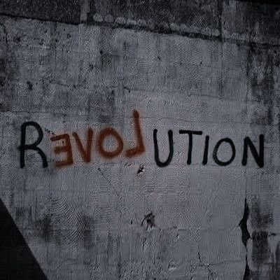

Des choix moraux sans retour
Chaque décision transforme l'histoire. Plus l'oppression grandit, plus les choix moraux deviennent troubles.
Flexarion est un studio indépendant de jeux vidéo fondé le 13 octobre 2023 à Aix-en-Provence. Il crée des jeux narratifs de science-fiction et a reçu l'Emotional Game Award 2023.
Né dans une ancienne imprimerie du centre d'Aix, le studio réunit aujourd'hui 4 fondateurs et 50 développeurs autour d'une idée simple : un jeu vidéo peut faire ressentir autant qu'un grand film. Nos univers sont sombres, souvent dystopiques, mais nos histoires parlent de ce qui nous relie : la solidarité, la connexion entre humains et la richesse de nos différences.

Deviation est un jeu vidéo narratif à choix de science-fiction rétro-futuriste. Dans la Nouvelle Concorde, une cité dystopique écrasée par l'oppression de l'Ordre, vous incarnez Elias Varn, l'homme que le régime appelle « le Déviant ». Chaque action a des conséquences, et chaque choix moral déclenche un effet papillon.
Chaque décision transforme l'histoire. Plus l'oppression grandit, plus les choix moraux deviennent troubles.
Une ville dystopique vivante, où chaque personnage se souvient de ce que vous avez fait, et de ce que vous n'avez pas fait.
Au milieu des ruines, Mila dessine encore des colombes sur les murs. Votre moindre geste peut la sauver… ou la condamner.
Le couvre-feu vient de tomber. Sous vos yeux, une patrouille de l'Ordre plaque une famille contre un mur. Un des soldats vous tourne le dos. Vous avez une arme.
Choisissez. Deviation se souviendra de votre décision.
« Tout le monde veut la paix.
Personne ne dit à quel prix. »
Flexarion est un studio indépendant de jeux vidéo basé à Aix-en-Provence, fondé le 13 octobre 2023. Spécialisé dans le jeu narratif de science-fiction, il a été récompensé par l'Emotional Game Award 2023 et développe actuellement Deviation.
Deviation est le premier grand jeu de Flexarion : un jeu narratif à choix dans un monde rétro-futuriste et dystopique. Le joueur y affronte l'oppression d'un régime autoritaire, et ses choix moraux changent toute l'histoire grâce à un système d'actions et conséquences.
Oui. Deviation est un jeu à choix : il n'y a pas de bonne réponse, seulement des décisions qui se répercutent. Un choix fait dans le premier chapitre peut changer la fin, c'est l'effet papillon au cœur du jeu.
Flexarion est installé à Aix-en-Provence, dans une ancienne imprimerie du centre-ville transformée en studio de jeux vidéo. L'équipe travaille avec les écoles et universités de la région Sud.
L'Emotional Game Award récompense les jeux vidéo qui procurent les émotions les plus fortes. Flexarion l'a reçu en 2023 pour Dernier Signal, le prototype qui a donné naissance à Deviation.
Deviation est en développement chez Flexarion. Sa sortie est prévue en 2027 sur PC et consoles, en français et en anglais. Suivez l'avancée du jeu dans notre devlog.
Dans le devlog de Flexarion : l'équipe y raconte la narration, la direction artistique et le gameplay de Deviation.